01 / Factory core
ai-dashboard
Integration hub
Understand the state of AI-assisted work from one local operator surface.
- INPUTAgents, tickets and signals
- OPERATIONBring work into view
- OUTPUTLocal operator overview
Factory checkpoints & source
Proposed checkpoints for discussing this project:
- Frame Read the published project brief
- Build Explore a bounded concept
- Check Review operator information
- Review Person reviews the proposal
Concept from public description; private source not reviewed. The local command center where I bring agents, inference, tickets, spend, evidence and machine health together.
Read the published description ↗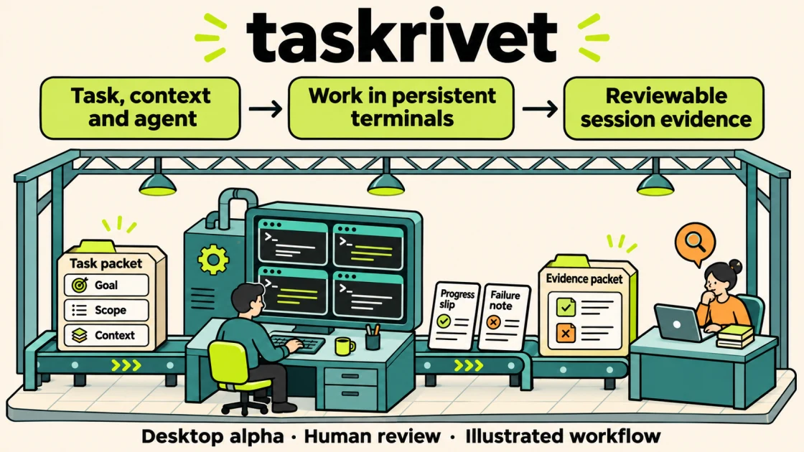
02 / Factory workflow
taskrivet
Desktop alpha
Keep the objective and evidence with an AI coding session instead of repeatedly rebuilding context.
- INPUTTask, context and agent
- OPERATIONWork in persistent terminals
- OUTPUTReviewable session evidence
Factory checkpoints & source
Proposed checkpoints for discussing this project:
- Frame Define the useful result
- Build Explore a bounded change
- Check Check session and evidence flow
- Review Person decides the next step
Mac app is unsigned and unnotarized; supervised selection and review remain explicit. Automated ticket selection, verified routing and autonomous acceptance are proposed.
Read the source at this revision ↗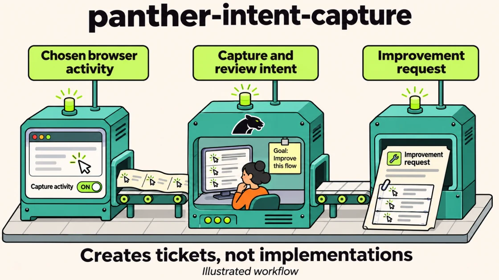
03 / Factory workflow
panther-intent-capture
Browser capture tool
Turn a confusing browser workflow into a request that retains the observed evidence.
- INPUTChosen browser activity
- OPERATIONCapture and review intent
- OUTPUTImprovement request
Factory checkpoints & source
Proposed checkpoints for discussing this project:
- Frame Define the useful result
- Build Explore a bounded change
- Check Review capture and request
- Review Person decides the next step
Creates tickets, not implementations. Capture is opt-in; hypotheses are not verified defects; unsupported media/browser paths remain excluded.
Read the source at this revision ↗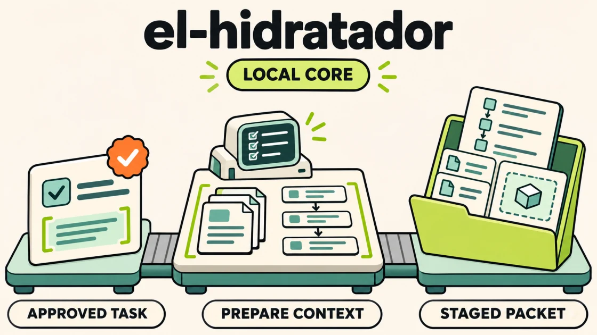
04 / Factory workflow
el-hidratador
Documented local core
Give an AI task enough context and a clear scope without confusing eligibility with permission.
- INPUTApproved task
- OPERATIONPrepare bounded context
- OUTPUTStaged work packet
Factory checkpoints & source
Proposed checkpoints for discussing this project:
- Frame Define the useful result
- Build Explore a bounded change
- Check Check scope and ownership
- Review Person decides the next step
Core has no network or shell execution. It stages and records work; routing eligibility is not execution authorization and a person accepts the result.
Read the source at this revision ↗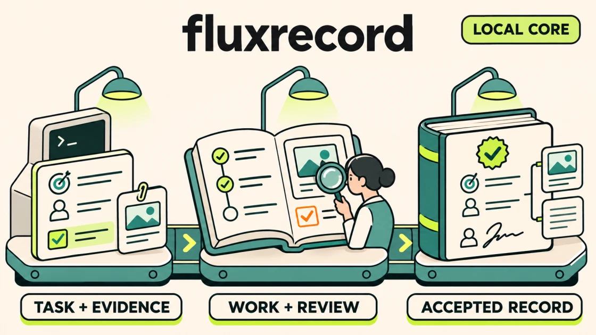
05 / Factory workflow
fluxrecord
Documented local core
Preserve objective, ownership, progress and failures when work crosses agent sessions.
- INPUTTask and evidence
- OPERATIONRecord work and review
- OUTPUTAccepted work record
Factory checkpoints & source
Proposed checkpoints for discussing this project:
- Frame Define the useful result
- Build Explore a bounded change
- Check Check review transition
- Review Person decides the next step
Worker finish creates review; only an operator decision creates done. No automated universal shipping claim is made by this illustration.
Read the source at this revision ↗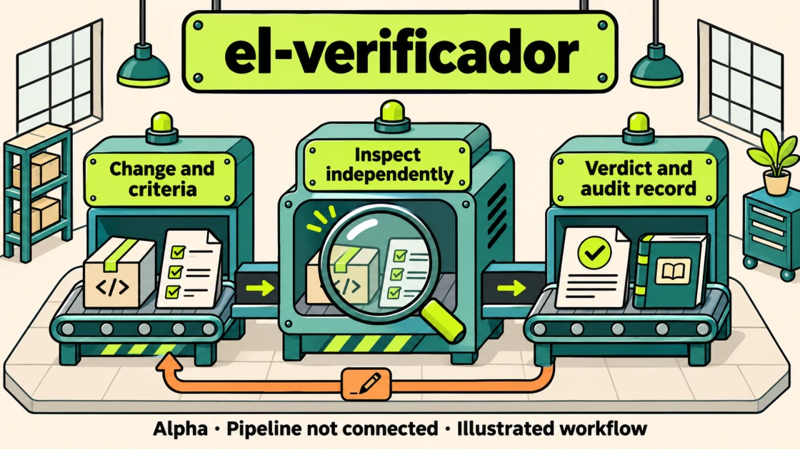
06 / Review and verification
el-verificador
Alpha; pipeline separate
Check a change against intent and acceptance criteria before treating the work as complete.
- INPUTChange and criteria
- OPERATIONInspect independently
- OUTPUTVerdict and audit record
Factory checkpoints & source
Proposed checkpoints for discussing this project:
- Frame Define the useful result
- Build Explore a bounded change
- Check Compare evidence to criteria
- Review Person decides the next step
Core verification loop is documented as implemented; the wider pipeline is explicitly not connected. Audit ledger is local, not a canonical external receipt.
Read the source at this revision ↗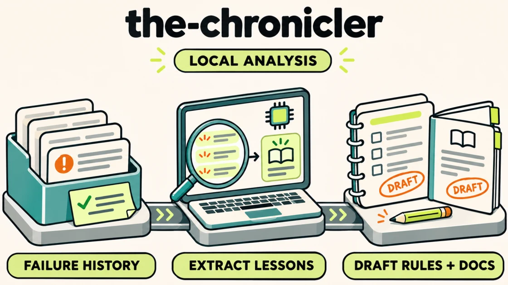
07 / Factory workflow
the-chronicler
Documented local daemon
Avoid repeating the same setup mistakes by retaining lessons from prior failures.
- INPUTFailure history
- OPERATIONExtract reusable lessons
- OUTPUTRules and documentation
Factory checkpoints & source
Proposed checkpoints for discussing this project:
- Frame Define the useful result
- Build Explore a bounded change
- Check Review proposed lessons
- Review Person decides the next step
README describes configured local ledger and model inputs plus repository writes. This review did not establish a live end-to-end factory integration or validate model conclusions.
Read the source at this revision ↗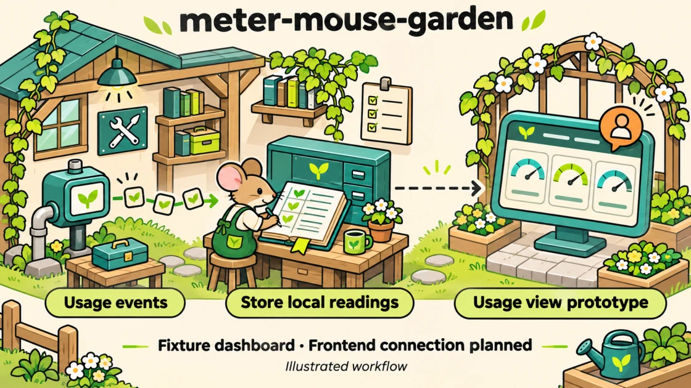
08 / Product experiments
meter-mouse-garden
Fixture-backed prototype
Make AI usage and agent-health information easier to inspect while separating observed values from estimates.
- INPUTUsage events
- OPERATIONStore local readings
- OUTPUTUsage view prototype
Factory checkpoints & source
Proposed checkpoints for discussing this project:
- Frame Define the useful result
- Build Explore a bounded change
- Check Distinguish fixtures from live data
- Review Person decides the next step
Static dashboard currently uses fixture data; Rust daemon and SQLite ledger exist, but the frontend connection is the next increment.
Read the source at this revision ↗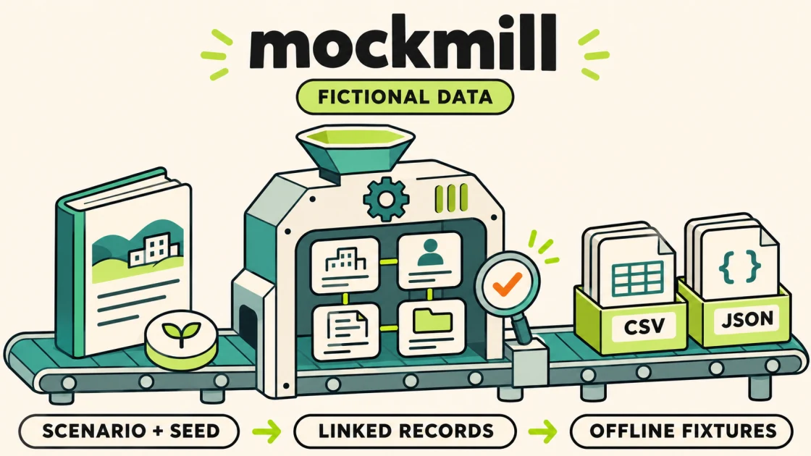
09 / Synthetic data
mockmill
Synthetic; offline
Test workflows with coherent fictional business data instead of disconnected sample rows or real customer records.
- INPUTScenario and seed
- OPERATIONGenerate linked records
- OUTPUTOffline CRM fixtures
Factory checkpoints & source
Proposed checkpoints for discussing this project:
- Frame Define the useful result
- Build Explore a bounded change
- Check Validate links and arithmetic
- Review Person decides the next step
Every person, company and transaction is fictional. Adapters generate CSV/JSON fixtures and do not perform live CRM imports.
Read the source at this revision ↗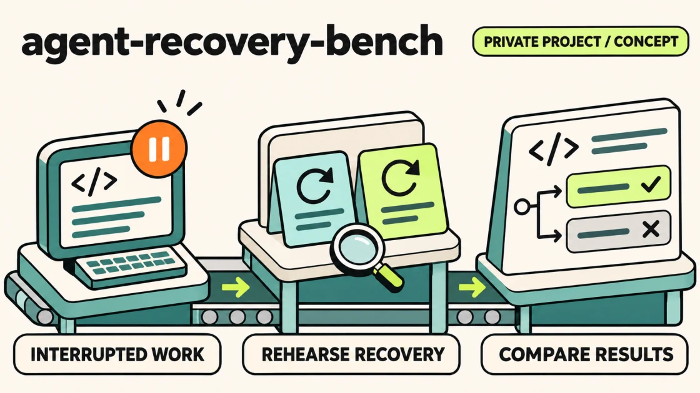
10 / Review and verification
agent-recovery-bench
Private benchmark
Explore how coding workflows resume after interruptions using offline scenarios.
- INPUTRecovery scenarios
- OPERATIONRehearse interruptions
- OUTPUTRecovery observations
Factory checkpoints & source
Proposed checkpoints for discussing this project:
- Frame Read the published project brief
- Build Explore a bounded concept
- Check Inspect a recovery scenario
- Review Person reviews the proposal
Concept from public description; private source not reviewed. Offline recovery scenarios for coding workflows; a benchmark workspace, not customer delivery evidence.
Read the published description ↗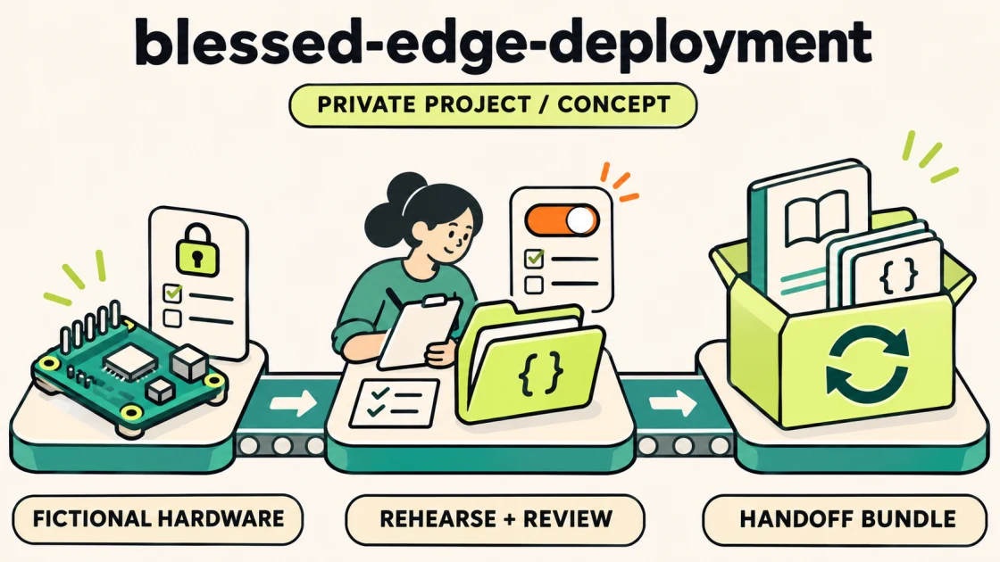
11 / Product experiments
blessed-edge-deployment
Private local demo
Explain a hardware-to-handoff flow with local permissions and repeatable demonstration material.
- INPUTFictional hardware scenario
- OPERATIONRehearse local handoff
- OUTPUTReproducible demo bundle
Factory checkpoints & source
Proposed checkpoints for discussing this project:
- Frame Read the published project brief
- Build Explore a bounded concept
- Check Review demo permissions
- Review Person reviews the proposal
Concept from public description; private source not reviewed. A fictional hardware-to-handoff rehearsal with local permissions and reproducible bundles.
Read the published description ↗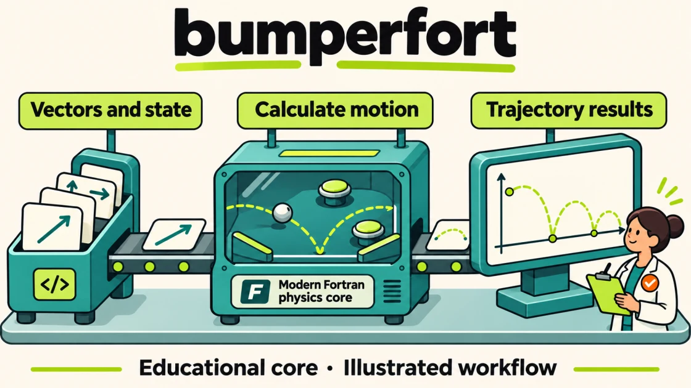
12 / Compute experiments
bumperfort
Educational core
Explore deterministic numerical kernels and the interface between numerical code and other tools.
- INPUTVectors and state
- OPERATIONCalculate motion
- OUTPUTTrajectory results
Factory checkpoints & source
Proposed checkpoints for discussing this project:
- Frame Define the useful result
- Build Explore a bounded change
- Check Check numerical cases
- Review Person decides the next step
README calls v0.1.0 an educational and usable core. Wider agent-embedding and hardware metaphors are a vision, not a qualified production claim.
Read the source at this revision ↗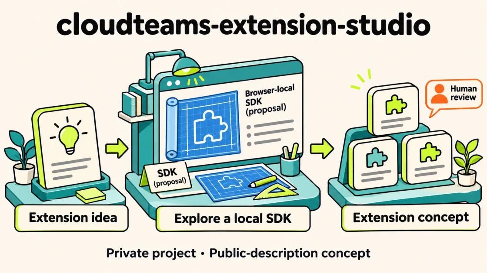
13 / Product experiments
cloudteams-extension-studio
Private prototype
Explore a small extension concept and the boundaries of a proposed browser-local SDK.
- INPUTExtension idea
- OPERATIONExplore a local SDK
- OUTPUTExtension concept
Factory checkpoints & source
Proposed checkpoints for discussing this project:
- Frame Read the published project brief
- Build Explore a bounded concept
- Check Review a proposed extension
- Review Person reviews the proposal
Concept from public description; private source not reviewed. Standalone extension concepts and a proposed browser-local SDK.
Read the published description ↗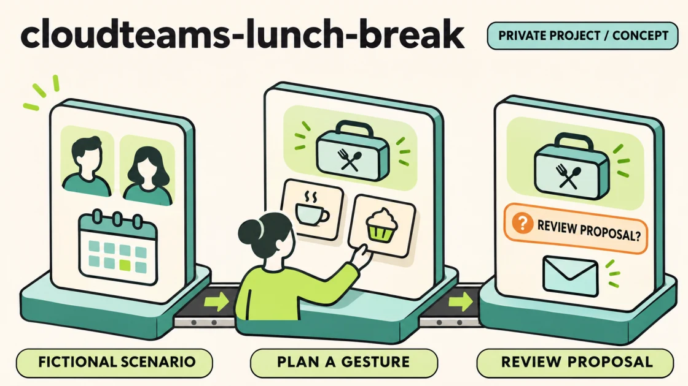
14 / Product experiments
cloudteams-lunch-break
Private experiment
Rehearse a fictional client-and-talent planning gesture with a visible human decision.
- INPUTFictional planning scenario
- OPERATIONExplore a gesture plan
- OUTPUTPlan for human review
Factory checkpoints & source
Proposed checkpoints for discussing this project:
- Frame Read the published project brief
- Build Explore a bounded concept
- Check Review fictional planning
- Review Person reviews the proposal
Concept from public description; private source not reviewed. A fictional client/talent gesture-planning demo derived from Extension Studio.
Read the published description ↗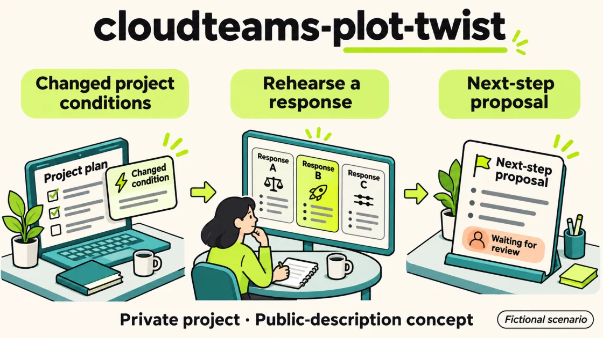
15 / Product experiments
cloudteams-plot-twist
Private experiment
Explore how a project plan could respond when its circumstances change.
- INPUTChanged project conditions
- OPERATIONRehearse a response
- OUTPUTNext-step proposal
Factory checkpoints & source
Proposed checkpoints for discussing this project:
- Frame Read the published project brief
- Build Explore a bounded concept
- Check Review a proposed response
- Review Person reviews the proposal
Concept from public description; private source not reviewed. A fictional demo for rehearsing changed project circumstances.
Read the published description ↗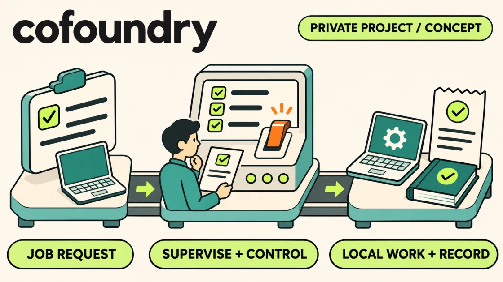
16 / Factory core
cofoundry
Private engine
Explore local job supervision with readiness and control information kept visible.
- INPUTJob and readiness signals
- OPERATIONSupervise local work
- OUTPUTAudited control record
Factory checkpoints & source
Proposed checkpoints for discussing this project:
- Frame Read the published project brief
- Build Explore a bounded concept
- Check Review readiness and controls
- Review Person reviews the proposal
Concept from public description; private source not reviewed. Packaged supervisor, job dispatch, local execution, readiness and audited controls.
Read the published description ↗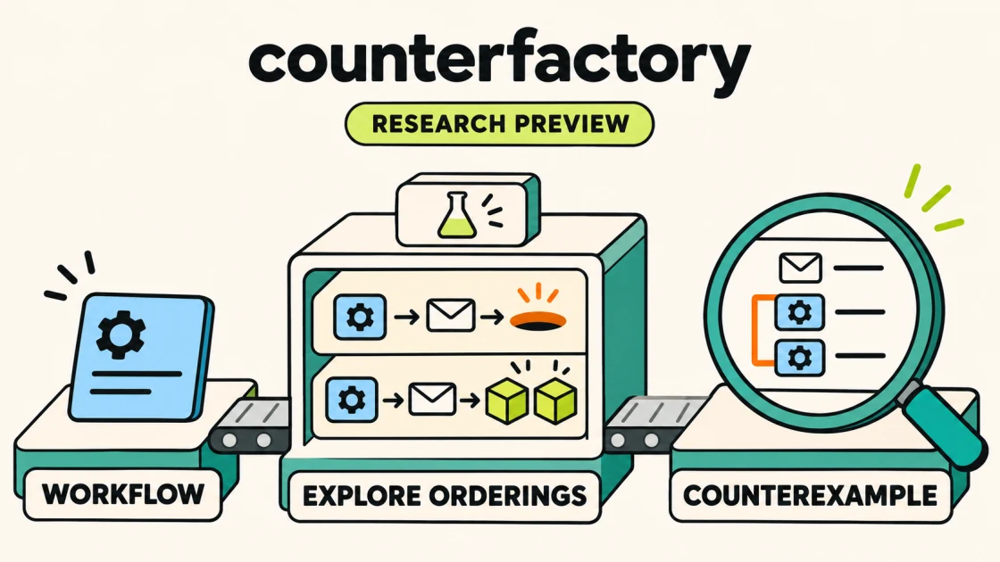
17 / Review and verification
counterfactory
Research preview
Understand how a lost reply can cause duplicate work even when individual components look healthy.
- INPUTWorkflow rules
- OPERATIONExplore failure orders
- OUTPUTCounterexample trace
Factory checkpoints & source
Proposed checkpoints for discussing this project:
- Frame Define the useful result
- Build Explore a bounded change
- Check Replay failure traces
- Review Person decides the next step
Synthetic finite models; a passing model does not prove a production implementation matches its assumptions.
Read the source at this revision ↗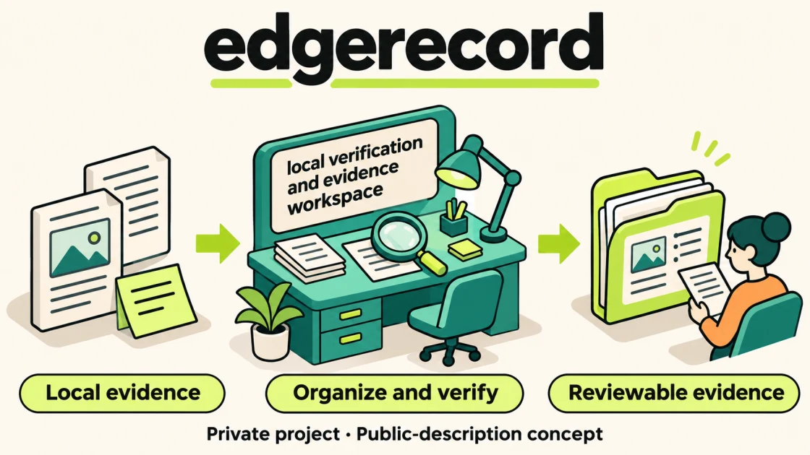
18 / Evidence and records
edgerecord
Private workspace
Keep local verification material organized for review.
- INPUTLocal evidence
- OPERATIONOrganize and verify
- OUTPUTReviewable evidence
Factory checkpoints & source
Proposed checkpoints for discussing this project:
- Frame Read the published project brief
- Build Explore a bounded concept
- Check Review evidence provenance
- Review Person reviews the proposal
Concept from public description; private source not reviewed. Local verification and evidence workspace.
Read the published description ↗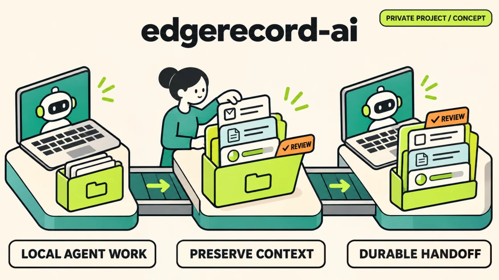
19 / Factory core
edgerecord-ai
Private workspace
Explore carrying agent context through a durable local handoff.
- INPUTAgent handoff context
- OPERATIONPrepare a local handoff
- OUTPUTDurable handoff record
Factory checkpoints & source
Proposed checkpoints for discussing this project:
- Frame Read the published project brief
- Build Explore a bounded concept
- Check Review the handoff contract
- Review Person reviews the proposal
Concept from public description; private source not reviewed. Local AI stack workspace and durable agent handoffs.
Read the published description ↗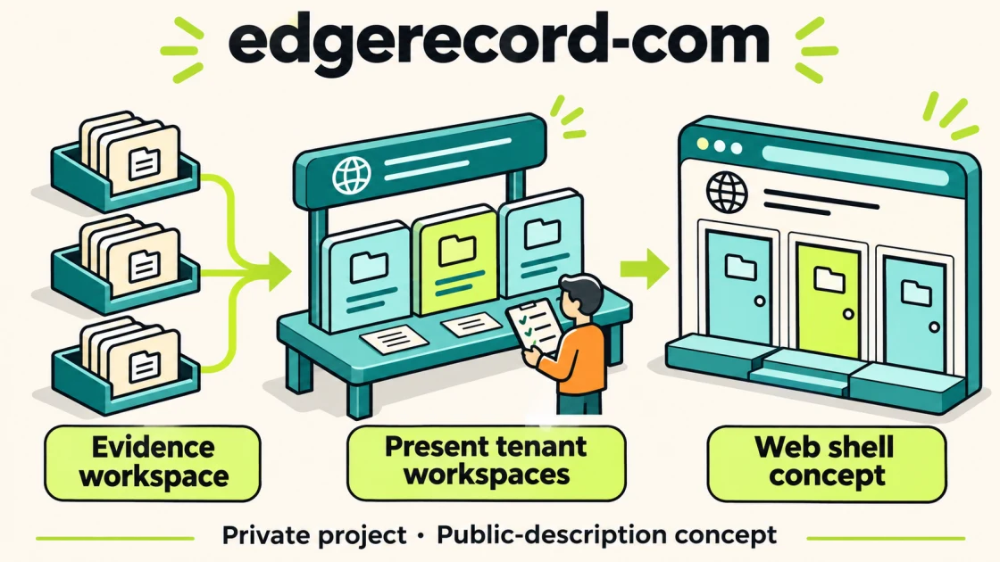
20 / Portfolio and communication
edgerecord-com
Private web shell
Explore a web surface for working with evidence across distinct tenant workspaces.
- INPUTEvidence workspace
- OPERATIONPresent tenant workspaces
- OUTPUTWeb shell concept
Factory checkpoints & source
Proposed checkpoints for discussing this project:
- Frame Read the published project brief
- Build Explore a bounded concept
- Check Review workspace separation
- Review Person reviews the proposal
Concept from public description; private source not reviewed. A multi-tenant web shell for the evidence workspace.
Read the published description ↗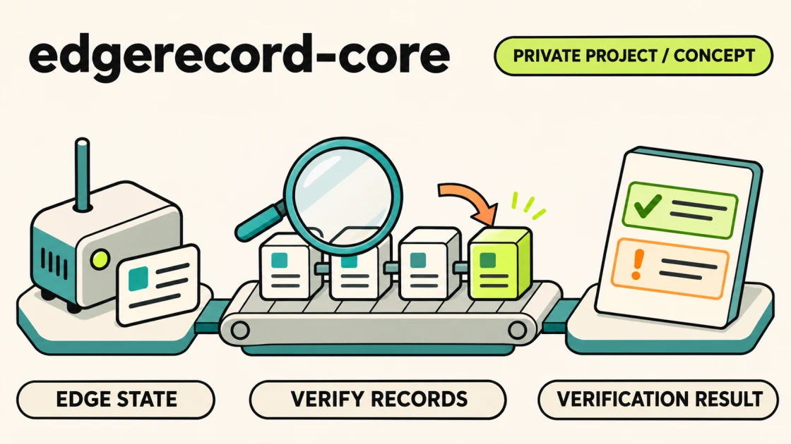
21 / Evidence and records
edgerecord-core
Private verifier
Explore deterministic checks of append-only state records from edge nodes.
- INPUTEdge-node state records
- OPERATIONVerify append-only state
- OUTPUTVerification result
Factory checkpoints & source
Proposed checkpoints for discussing this project:
- Frame Read the published project brief
- Build Explore a bounded concept
- Check Review a synthetic state case
- Review Person reviews the proposal
Concept from public description; private source not reviewed. Deterministic append-only state verification for edge nodes.
Read the published description ↗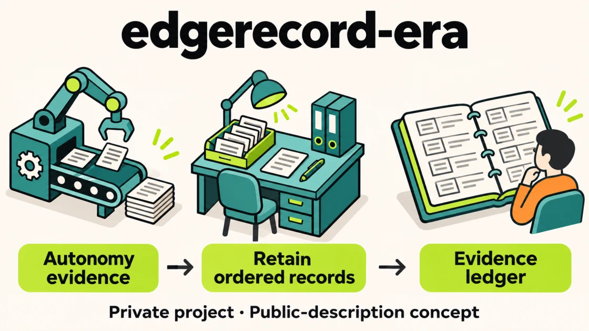
22 / Evidence and records
edgerecord-era
Private ledger
Keep autonomy-related evidence in an organized records ledger.
- INPUTAutonomy evidence
- OPERATIONRetain ordered records
- OUTPUTEvidence ledger
Factory checkpoints & source
Proposed checkpoints for discussing this project:
- Frame Read the published project brief
- Build Explore a bounded concept
- Check Review a sample receipt
- Review Person reviews the proposal
Concept from public description; private source not reviewed. Autonomy evidence and records ledger.
Read the published description ↗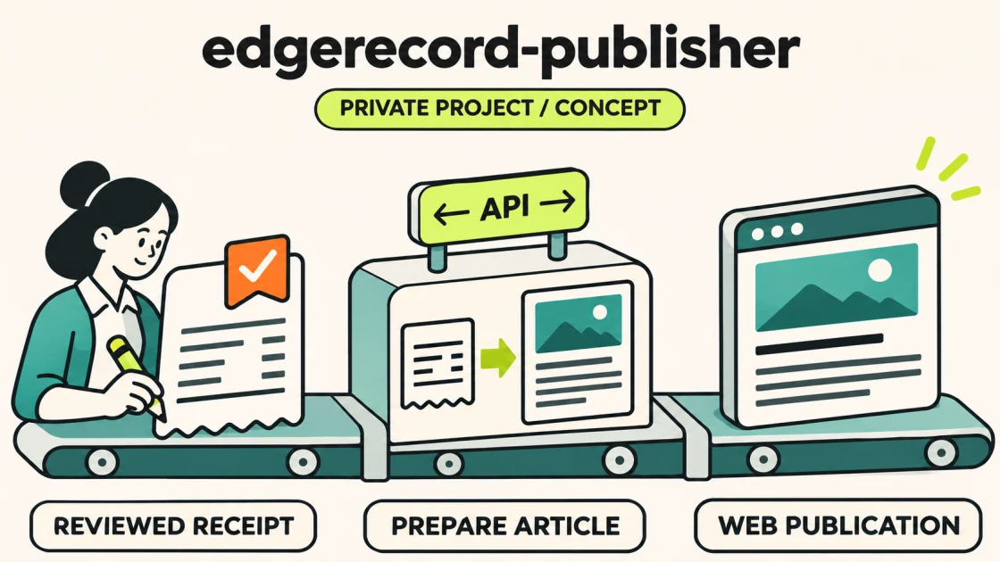
23 / Portfolio and communication
edgerecord-publisher
Private publishing adapter
Explore how a reviewed receipt could become publishable material through Joomla Web Services.
- INPUTReviewed ledger receipt
- OPERATIONPrepare publication
- OUTPUTArticle preview concept
Factory checkpoints & source
Proposed checkpoints for discussing this project:
- Frame Read the published project brief
- Build Explore a bounded concept
- Check Review receipt-to-article text
- Review Person reviews the proposal
Concept from public description; private source not reviewed. Publish reviewed ledger receipts through Joomla Web Services.
Read the published description ↗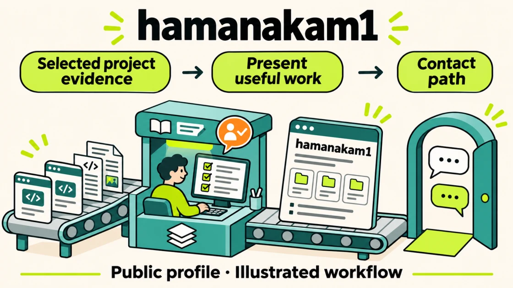
24 / Portfolio and communication
hamanakam1
Public profile
Help a prospective customer understand relevant work and how to discuss a paid project.
- INPUTSelected project evidence
- OPERATIONPresent useful work
- OUTPUTContact path
Factory checkpoints & source
Proposed checkpoints for discussing this project:
- Frame Define the useful result
- Build Explore a bounded change
- Check Check links and readability
- Review Person decides the next step
This repository is the profile presentation, not a runtime factory component. Inventory text may lag the refreshed census.
Read the source at this revision ↗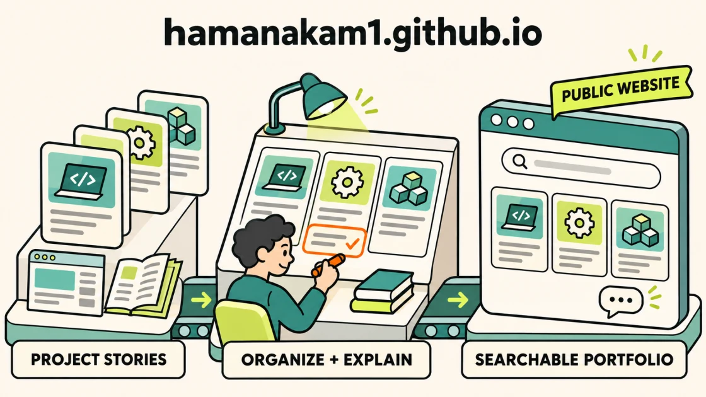
25 / Portfolio and communication
hamanakam1.github.io
Public website
Let a prospective customer explore software examples, scope and contact options.
- INPUTProject stories
- OPERATIONOrganize and explain
- OUTPUTSearchable portfolio
Factory checkpoints & source
Proposed checkpoints for discussing this project:
- Frame Define the useful result
- Build Explore a bounded change
- Check Check navigation and access
- Review Person decides the next step
Portfolio diagrams describe responsibilities and proposed handoffs; animation is illustrative, not live execution telemetry.
Read the source at this revision ↗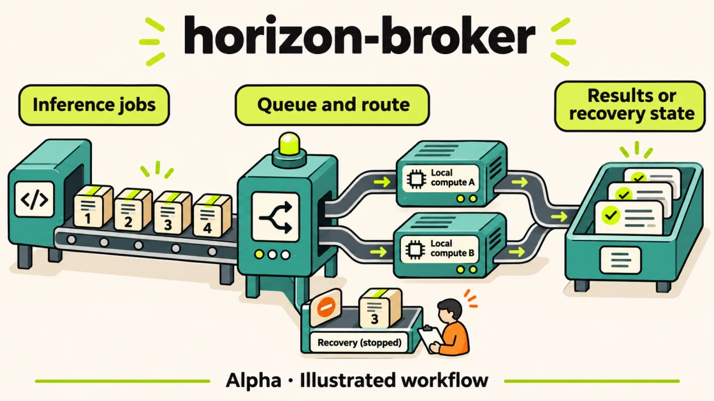
26 / Compute and transport
horizon-broker
Alpha
Keep local inference work inspectable when jobs take time or a worker stops responding.
- INPUTInference jobs
- OPERATIONQueue and route
- OUTPUTResults or recovery state
Factory checkpoints & source
Proposed checkpoints for discussing this project:
- Frame Define the useful result
- Build Explore a bounded change
- Check Check failed-worker recovery
- Review Person decides the next step
One broker owns one fleet; external ledger adapter is not complete. KV handoff depends on engine support; Ollama degrades to whole-job execution.
Read the source at this revision ↗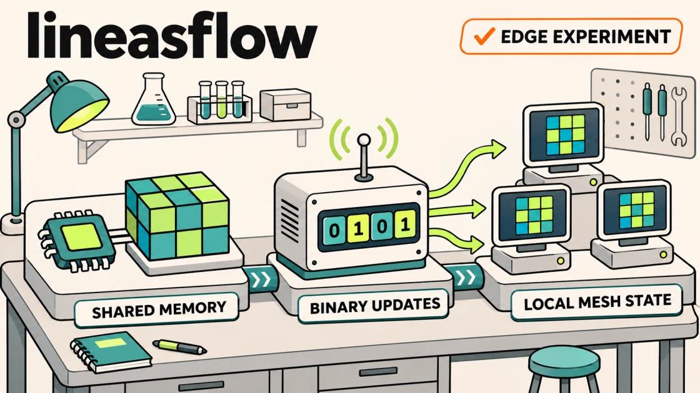
27 / Compute and transport
lineasflow
Documented daemon
Move numerical state from a local producer to other machines without a JSON conversion step.
- INPUTShared-memory state
- OPERATIONBroadcast binary updates
- OUTPUTLocal mesh state
Factory checkpoints & source
Proposed checkpoints for discussing this project:
- Frame Define the useful result
- Build Explore a bounded change
- Check Check binary round trips
- Review Person decides the next step
README describes shared-memory and UDP multicast components. No live multi-node deployment or benchmark result was verified for this visual.
Read the source at this revision ↗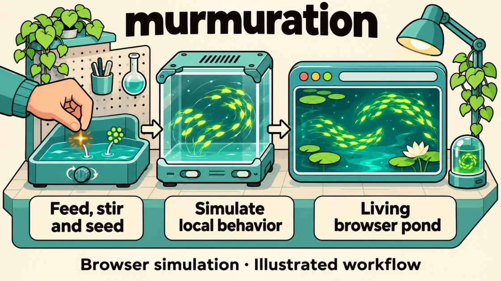
28 / Creative software
murmuration
Browser simulation
Create a playful interactive browser demonstration with inspectable simulation behavior and saved state.
- INPUTFeed, stir and seed
- OPERATIONSimulate local behavior
- OUTPUTLiving browser pond
Factory checkpoints & source
Proposed checkpoints for discussing this project:
- Frame Define the useful result
- Build Explore a bounded change
- Check Check simulation and saved state
- Review Person decides the next step
Simplified artificial-life toy, not biological modeling or trained intelligence. JavaScript, Canvas 2D and WebGL are current; Odin/WASM is proposed.
Read the source at this revision ↗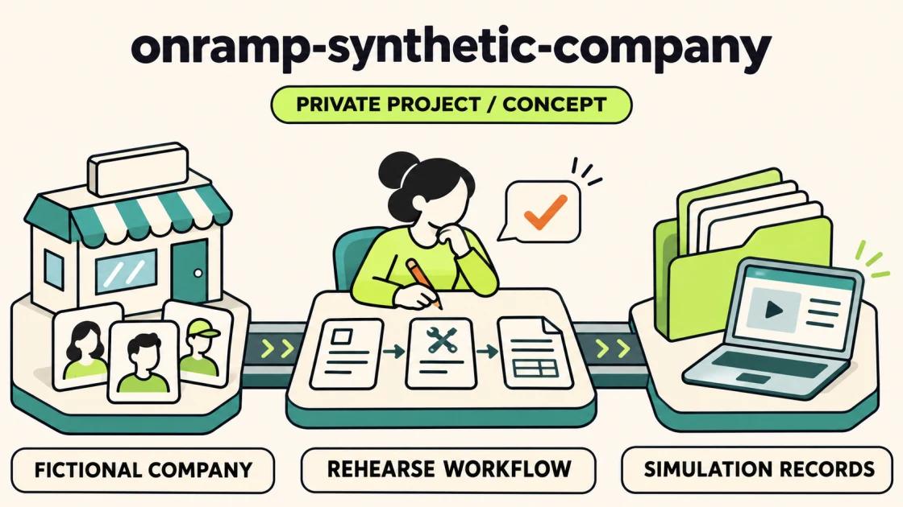
30 / Synthetic data
onramp-synthetic-company
Private simulation
Practice a business workflow using a fictional company dataset.
- INPUTFictional company records
- OPERATIONRehearse business workflows
- OUTPUTScenario observations
Factory checkpoints & source
Proposed checkpoints for discussing this project:
- Frame Read the published project brief
- Build Explore a bounded concept
- Check Review fictional scenario data
- Review Person reviews the proposal
Concept from public description; private source not reviewed. A fictional company dataset for local business-workflow rehearsals.
Read the published description ↗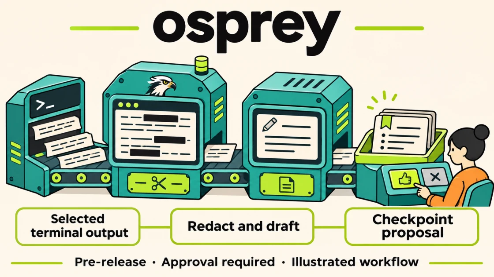
31 / Factory workflow
osprey
Pre-release
Turn selected terminal activity into reviewable work records while keeping approval with a person.
- INPUTSelected terminal output
- OPERATIONRedact and draft
- OUTPUTCheckpoint proposal
Factory checkpoints & source
Proposed checkpoints for discussing this project:
- Frame Define the useful result
- Build Explore a bounded change
- Check Check redaction and approval
- Review Person decides the next step
Local Taskrivet supervisor; capture is read-only and ledger write requires explicit approval. It does not complete tasks or diagnose failures.
Read the source at this revision ↗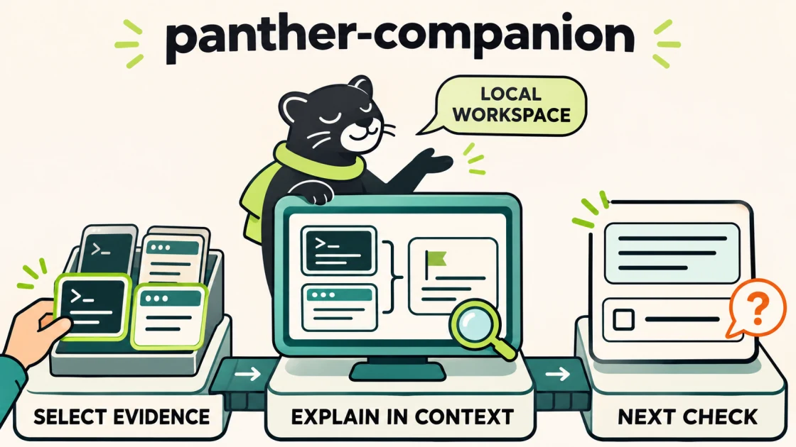
32 / Factory workflow
panther-companion
Local workspace
Help a person interpret a result in relation to the task they are trying to finish.
- INPUTSelected evidence
- OPERATIONExplain in goal context
- OUTPUTMeaning and next check
Factory checkpoints & source
Proposed checkpoints for discussing this project:
- Frame Define the useful result
- Build Explore a bounded change
- Check Trace explanation to evidence
- Review Person decides the next step
Inputs are selected or explicitly configured. Importing evidence does not authorize execution; optional sources and model use remain separate choices.
Read the source at this revision ↗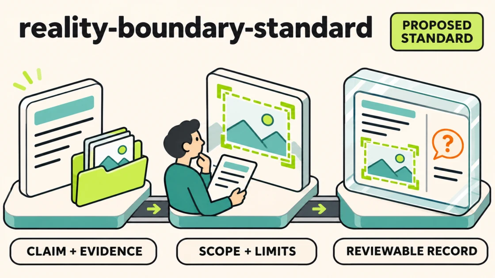
33 / Review and verification
reality-boundary-standard
Proposed standard
State what a technical claim actually supports and what remains a proposal.
- INPUTClaim and evidence
- OPERATIONDeclare scope and limits
- OUTPUTReviewable claim record
Factory checkpoints & source
Proposed checkpoints for discussing this project:
- Frame Define the useful result
- Build Explore a bounded change
- Check Check claim scope and evidence
- Review Person decides the next step
0.1.0 draft with no certification program. Structural validation does not establish factual truth or full conformance.
Read the source at this revision ↗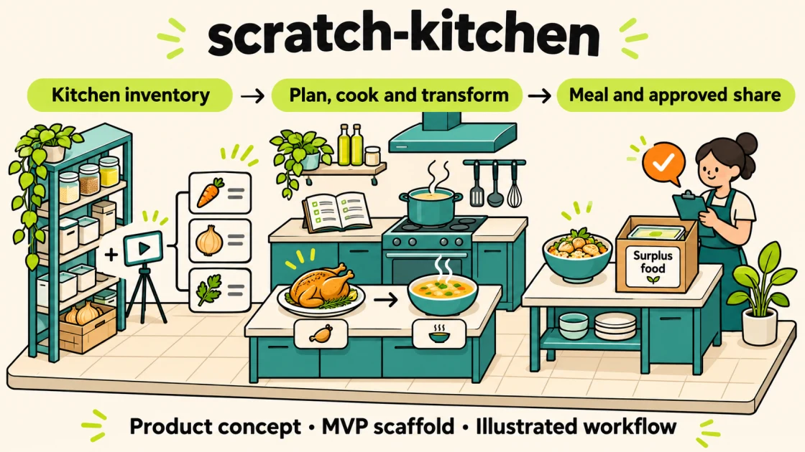
34 / Product experiments
scratch-kitchen
MVP scaffold
Use ingredients already on hand and turn surplus into a different meal or a deliberate share.
- INPUTKitchen inventory
- OPERATIONPlan, cook and transform
- OUTPUTMeal and approved share
Factory checkpoints & source
Proposed checkpoints for discussing this project:
- Frame Define the useful result
- Build Explore a bounded change
- Check Validate a proposed meal flow
- Review Person decides the next step
Illustrated product concept. Elixir/SwiftUI structure is not yet a compiled shippable application; proposed recognition and sharing behavior must be labeled.
Read the source at this revision ↗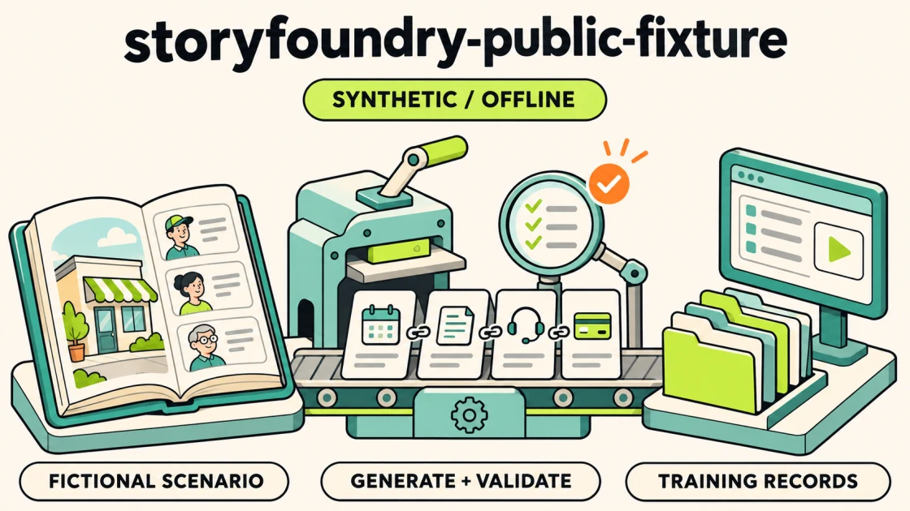
35 / Synthetic data
storyfoundry-public-fixture
Synthetic; offline
Practice CRM workflows on a deterministic fictional service-company history.
- INPUTFictional scenario
- OPERATIONGenerate and validate
- OUTPUTTraining records
Factory checkpoints & source
Proposed checkpoints for discussing this project:
- Frame Define the useful result
- Build Explore a bounded change
- Check Replay and validate the fixture
- Review Person decides the next step
All company, person and transaction records are fictional. Import preview is a dry run with no target client and no authority to contact or charge anyone.
Read the source at this revision ↗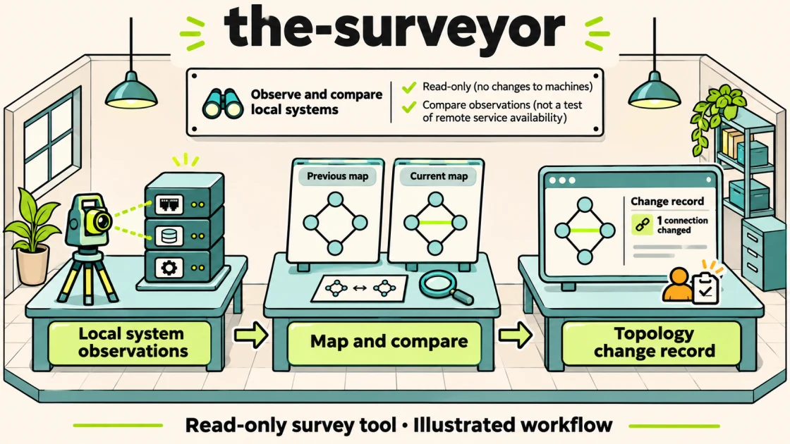
36 / Compute and transport
the-surveyor
Read-only survey tool
Understand what is actually present on a machine and what changed since the previous survey.
- INPUTLocal system observations
- OPERATIONMap and compare
- OUTPUTTopology change record
Factory checkpoints & source
Proposed checkpoints for discussing this project:
- Frame Define the useful result
- Build Explore a bounded change
- Check Compare observations and changes
- Review Person decides the next step
Observes the box on which it runs; a topology map is not proof that remote services or integrations work. Notifications require configuration.
Read the source at this revision ↗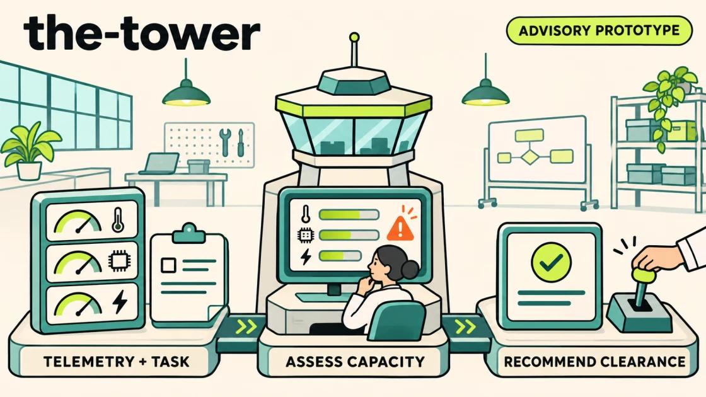
37 / Compute and transport
the-tower
Advisory prototype
Make local compute decisions visible against resource conditions and explicit controls.
- INPUTTelemetry and task request
- OPERATIONAssess capacity
- OUTPUTClearance recommendation
Factory checkpoints & source
Proposed checkpoints for discussing this project:
- Frame Define the useful result
- Build Explore a bounded change
- Check Check advisory and enforce boundary
- Review Person decides the next step
Two of three demo nodes are simulated; macOS temperature is estimated. Fresh installs are advisory; enforcement requires explicit per-node opt-in.
Read the source at this revision ↗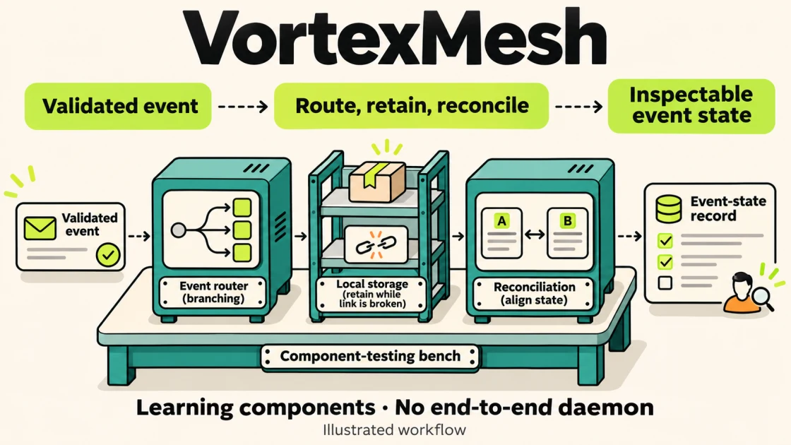
38 / Compute and transport
VortexMesh
Learning components
Explore small transport components for events crossing intermittent links.
- INPUTValidated event
- OPERATIONRoute, retain, reconcile
- OUTPUTInspectable event state
Factory checkpoints & source
Proposed checkpoints for discussing this project:
- Frame Define the useful result
- Build Explore a bounded change
- Check Check component boundaries
- Review Person decides the next step
Transport, WAL and reconciliation are separately implemented; no daemon connects them end to end. Authorization, discovery adapters and other deployment pieces remain planned.
Read the source at this revision ↗